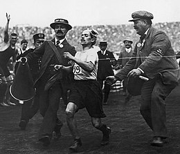
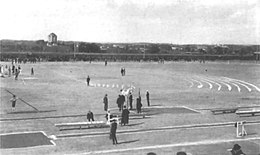

The International Olympic Committee (IOC) was founded in 1894 when Pierre
de Coubertin, a French pedagogue and historian, sought to promote international
understanding through sporting competition. The first edition of The Olympic Games
was held in Athens in 1896 and attracted just 245 competitors, of whom more than
200 were Greek, and only 14 countries were represented. Nevertheless, no
international events of this magnitude had been organised before. Female athletes
were not allowed to compete, though one woman, Stamata Revithi, ran the marathon
course on her own, saying "If the committee doesn't let me compete I will go after
them regardless".[4]
The 1896 Summer Olympics, officially known as the Games of the Olympiad,
was an international multi-sport event which was celebrated in Athens, Greece,
from 6 to 15 April 1896. It was the first Olympic Games held in the modern era.
About 100,000 people attended for the opening of the games. The athletes came from
14 nations, with most coming from Greece. Although Greece had the most athletes,
the U.S. finished with the most champions. 11 Americans placed first in their events vs.
the 10 from Greece.[5] Ancient Greece was the birthplace of the Olympic Games, consequently
Athens was perceived to be an appropriate choice to stage the inaugural modern Games. It was
unanimously chosen as the host city during a congress organised by Pierre de Coubertin
in Paris, on 23 June 1894. The IOC was also established during this congress.

Despite many obstacles and setbacks, the 1896 Olympics were regarded as a great success.
The Games had the largest international participation of any sporting event to that date.
Panathinaiko Stadium, the first big stadium in the modern world, overflowed with the largest
crowd ever to watch a sporting event.[6] The highlight for the Greeks was the marathon victory
by their compatriot Spiridon Louis, a water carrier. He won in 2 hours, 58 minutes and 50 seconds,
setting off wild celebrations at the stadium. The most successful competitor was German wrestler and
gymnast Carl Schuhmann, who won four gold medals.
Greek officials and the public were enthusiastic about the experience of hosting an Olympic Games.
This feeling was shared by many of the athletes, who even demanded that Athens be the permanent
Olympic host city. The IOC intended for subsequent Games to be rotated to various host cities around
the world. The second Olympics was held in Paris.[7]
Four years later the 1900 Summer Olympics in Paris attracted more than four times
as many athletes, including 20 women, who were allowed to officially compete for the first
time, in croquet, golf, sailing, and tennis. The Games were integrated with the Paris World's
Fair and lasted over five months. It has been disputed which exact events were Olympic, as some
events were for professionals, some had restricted eligibility, and others lacked international
competitors.

Tensions caused by the Russo–Japanese War and the difficulty of getting to St.
Louis may have contributed to the fact that very few top-ranked athletes from
outside the US and Canada took part in the 1904 Games.[8]
The "Second International Olympic Games in Athens", as they were called at the time,
were held in 1906.[9] The IOC does not currently recognise these games as being official
Olympic Games, although many historians do and credit the 1906 games with preventing the
demise of the Olympics. The 1906 Athens games were the first of an alternating series of
games to be held in Athens in even non-Olympic years, but the series failed to materialise.
The games were more successful than the 1900 and 1904 games, with over 850 athletes competing,
and contributed positively to the success of future games.